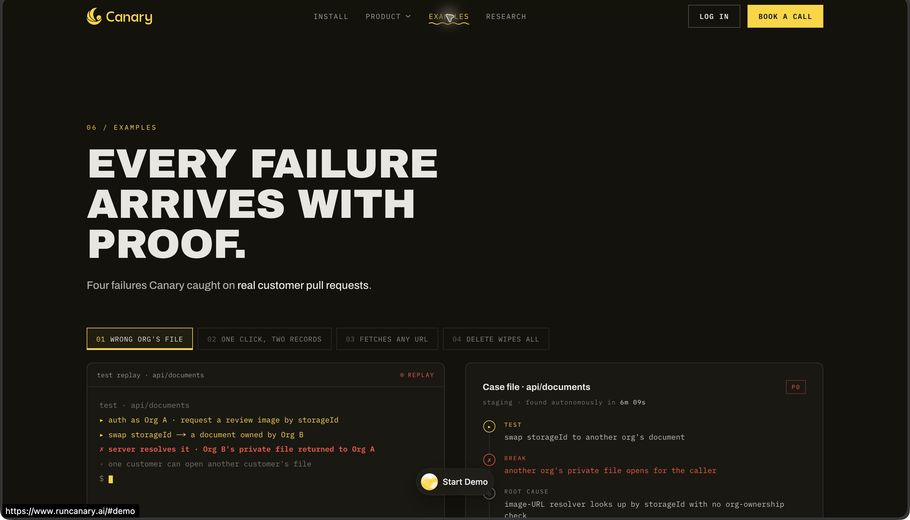

Canary — 機能・導線・画面
確認日：2026年10月27日。全体比較・画面／動画ギャラリー
調査範囲
コード差分を起点とする独立した検証層。CLI／開発Agent／PRの起動経路。
公開コードとExamplesの紹介表示を確認。CLIの起動、sandbox構築、報告、回帰資産の保存は未実行。公開例の検出実績は提供者の主張。
作業の流れ
Install prompt → stack接続 → working tree／PR → Read → Run → Break → Verify → case file → 修正 → regression
機能の構成
公開ページにRead／Run／Break／Verify、In your agent／On every PR／Fix loop／Report、4件のExamples。アカウント内ナビは未確認。
下表は公開説明・文書の要約。実操作した範囲は画面一覧と調査範囲に限定し、表全体を実機検証済みとはしない。
| 段階 | 画面・機能 | 入力・操作と次の行動 |
|---|---|---|
| 開始 | Install | 開発Agentへ渡す導入プロンプトとCLIを案内。今回はインストールしていない。 |
| 対象 | Working tree・PR | 未コミットの変更またはPRを起点に、コードベースと差分を読む。 |
| 計画 | Read | 変更が届くユーザーフローを把握し、テスト候補を用意する。 |
| 準備・実行 | Run・Break | sandboxでアプリを起動し、通常系以外の挙動も試すと説明。 |
| 確認 | Verify | 検出した疑いを根拠付きの結果として整理する。 |
| 報告 | Case file | 再現手順、実際の破綻、原因と修正案、重大度を紹介例に表示。 |
| 保守 | Fix loop・Regression | 修正後の再確認と、検出経路の継続回帰を案内。 |
| 連携 | GitHub・Linear・Sentry等 | コード・障害・資料等の既存文脈を参照。接続設定・権限の実画面は未確認。 |
人の担当と比較上の着眼点
導入・stack接続、業務の正解や操作制限、修正の採否を判断する。
調査者の解釈：コードの意図を理解する検証は強い代替。コードと同じ誤解に依存しない業務期待の取り方を比較する。 製品性能の優劣を実証した結論ではない。
動画と見る場面
製品操作を確認できる動画を今回保存できていない。存在しない・非対応という意味ではない。問い合わせ画面で代用しない。
画面一覧
| 画面 | 種別 | 出典 |
|---|---|---|
 公開case file：再現・原因・修正例 |
official-ui-example | 掲載元 |